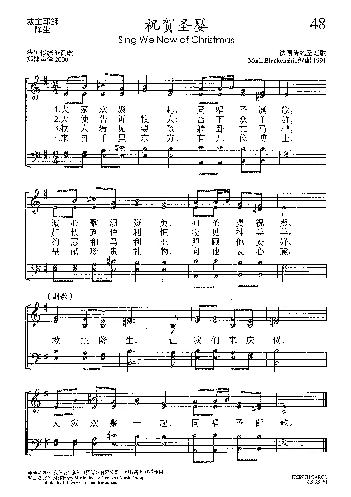
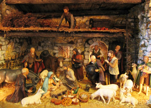
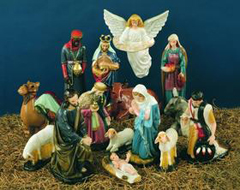

|
|
【祝賀聖嬰】 |
|
1 Sing we now of Christmas,
Chorus:
2 Angels called to shepherds,
3 In the stall they found Him;
4 From the eastern country
5 Gold and myrrh they took there, |
大家歡聚一起，同唱聖誕歌， |
|
https://www.xueshengshi.com/?p=9793 赞美诗（补充本）
 |
|
|
|
|

| Text: | Sing We Now of Christmas |
| Tune: | FRENCH CAROL |
| Arranger: | Mark Blankenship |
| Short Name: | Mark Blankenship |
| Full Name: | Blankenship, Mark, 1943- |
| Birth Year: | 1943 |
http://www.markblankenshipmusic.com/
|
|
|
Mark Blankenship is a music minister, composer, arranger, orchestrator, music leader, former publisher director, and worship specialist. His ministry career spans over 47 years. His ministry career began in Texas and occupied several states before his current place of ministry in Hilton Head Island, SC. Mark was born in Chicago, IL while his father was attending Moody Bible Institute preparing to be a pastor. He grew up in the Southwest, primarily in Texas. His college work was done at Oklahoma Baptist University (BM) and The University of Texas (MM). He began his music minister role started in smaller churches, but in his mid-twenties was already positioned in large Southern Baptist churches such as First Baptist Church, Midland, TX, and North Phoenix Baptist Church in Phoenix, AZ. During those years in music ministry, Mark became increasingly interested in composing and arranging music. |

Mark
receiving the W. Hines Sims Award from
the Southern Baptist Church Music Conference in 2008 |
He followed the Lord's leadership in 1974 and moved to Nashville, TN to become a Youth and Adult Music Editor for LifeWay. He ministered there for nearly 30 years in that role, including his service as director of the Music Department and all its publication imprints from 1993-2000.
While in Nashville, Mark's writing career flourished and he became quite prolific. Having had over 400 pieces of published music during his career, he has been commissioned by churches and universities on numerous occasions to write anthems, major musicals, and hymns.
Mark also purposefully pursued music leadership relationships with leaders around the country. He was even involved with leadership in the international community on numerous occasions in the Philippines, Japan, Australia, Germany and Switzerland. In the fall of 2012 he will teach worship and music in Botswana, Africa.
Mark has been a featured vocalist on over 100 television segments, as well as co-arranging and co-orchestrating much of the music that was used in those segments with Buryl Red.
Besides his role in
local churches and with LifeWay, Mark served as President of the Southern
Baptist Church Music Conference for two years. His awards include:
|
Mark enjoys retirement in Huntsville, Alabama with his wife Judy Starr Blankenship. Their family includes a daughter who resides in New York City, and a son and his family who live in Huntsville, AL.
Mark's prayer is that this website will provide resources for local church music ministers and publishers to help people worship the Lord.
History of Hymns: “Sing We Now of Christmas”
BY C. MICHAEL HAWN

"Sing We Now of Christmas"
Traditional French Carol
The United Methodist Hymnal, No. 237
Sing we now of Christmas, Noel sing we here!
Hear our grateful praises to the babe so dear.
Sing we Noel, the King is born, Noel!
Sing we now of Christmas, sing we now Noel!
The French people love to sing at Christmas! Chants de Noël (Christmas Carols) from France may be found in most English-language hymnals. You may have sung the playful “Il est né le devin enfant” (“He Is Born”, The United Methodist Hymnal, No 228) with its delightful inclusion of “oboe and bagpipes.” See the following link for a discussion of this hymn: "History of Hymns: French carol “He Is Born” celebrates joyous season." This carol recalls the long wait of the prophets and invites the singers to join a lively shepherd folk band at the manger.
“Les anges dans nos campagnes” (“Angels We Have Heard on High”, The United Methodist Hymnal, No. 238) contains one of the few Latin phrases still sung by many congregations: Gloria in excelsis Deo (“Glory to God in the highest,” Luke 2:14). Technically, this is a macaronic carol because it uses two languages – the local vernacular and Latin. The total focus of this carol is on the shepherds’ visit to the manger at the invitation of the angelic chorus on perhaps the longest melismatic passage (many notes on a single syllable) that congregations sing: Glo – o – o – o – o – o – o – o – o – o – o – o – o – o – o – o – ria! In music, usually the more notes a composer ascribes to a single word or syllable indicate that it is very important or carries much emotion.
These two carols along with “Un flambeau Jeannette Isabelle” (“Bring a torch Jeannette Isabella”) and “Sing we now of Christmas” are the most popular of many in the French tradition available in the English-speaking world. The famous “O Holy Night,” translated into English in the nineteenth century, is originally a French carol, Chantique de Noël.
“Noël nouvelet, Noël chanton ici” (“Sing we now of Christmas”) follows well in this tradition, but brings a distinctive emphasis. Unlike those mentioned above, the five stanzas include not only the angels’ song and the visit by the shepherds, but also the journey of the Magi. We participate with the biblical characters in the drama on the refrain:
Chantons Noël pour le Roi nouvelet!
Noël nouvelet, Noël chantons ici!
Sing we Noel, the King is born, Noel!
Sing we now of Christmas, sing we now Noel!

“Sing we now of Christmas” is a perfect song to accompany the French tradition of the crèche. Handmade nativity scenes are not only common in homes, but also in town squares. Little clay figures, traditionally made in the south of France, are called “santons” (“little saints”). Fine craftsmanship characterizes the production of these figures, and they are a source of local pride for the communities that produce them. It is interesting that “crèche” is also the French term for nursery for young children during the day.
Christmas trees, though not absent from France, are more of a German tradition, as the traditional folksong “O Tannenbaum” (“O Christmas Tree”) attests. The crèche, on the other hand, is the more common focal point for the season in France.
This tradition is particularly strong in Provence, the south of France, with a crèche that includes the Holy Family, the Magi, the shepherds, and the animals, along with additional local figures, such as the mayor, the little drummer boy, or a peasant, dressed in traditional attire. In some villages, people dress as the shepherds and join in a procession to the church. Children often contribute to domestic crèches by bringing small stones, moss, and evergreens to complete the scene. Then, everyone sings carols!
Perhaps this tradition explains the focus of many chants de noël. They are often sung around the crèche in homes or in procession to the church, dressed as shepherds. Rather than viewing the scene, it seems that the singer actually joins the biblical characters as a part of the scene. Rather than the focus on the Christmas tree with a manger scene placed in some adjacent location, the focus is on the crèche itself and those persons that make up the nativity ensemble. This idea is an outgrowth of the French Renaissance when humanity assumed an important role in cosmic events.
Congregational songs were not sung in Catholic liturgy at this time. These were songs of the people. Even so, they did not lack theology or symbolic sophistication. NOEL NOUVELET, literally “Christmas comes anew,” is a tune that dates to the late fifteenth century. The original French text, perhaps patterned on the twelve days of Christmas, includes stanzas not translated into English. Without these stanzas, the result is a basic nativity narrative. One earlier stanza discusses the actual composition process of the song:
En trente jours Noël fut accompli.
En douze vers sera mon chant fini
En chacun jours j'en ai fait un couplet
Noël nouvelet Noël chantons ici.
[Christmas in thirty days was accomplished.
In twelve days will my song be finished;
In each day I made a couplet:
Christmas comes anew, sing of Christmas here.]
Other original stanzas speak of new awakenings, signs of the Renaissance, a time that emerges from the paganism that heretofore had dominated the Medieval Era. A literal translation of an earlier French version connects the new awakenings to the blossoming of nature:
Waking from my sleep, a vision came to me;
For before my eyes there stood a flow'ring tree,
Where on a bright red rosebud I did see.
Noël nouvelet, a new Noël sing we.
How my heart did glow, with inward joy divine!
For with rays of glory did the rosebud shine,
As when the sun doth blaze on break of day.
This new Noël sing we: Noël nouvelet!
Then a tiny bird ceased joyous song to say
Unto certain shepherds: "Haste you now away!
In Bethlehem the newborn Lamb you'll see."
Noël nouvelet, a new Noël sing we!
Some English singing translations preserve the reference to the “Lamb” – usually in the diminutive form “lambkin” (sometimes “Lambkin”), the latter which obscures the reference to the Infant Jesus as the Incarnate Lamb of God, rather than to a literal lamb in the field. As is usually the case, singing translations lose much of the original imagery. What appears to be a simple retelling of the Christmas narrative finds its roots in the culture and domestic pageantry of its day. The birth of Christ represents a spiritual awakening, a deeper connection between God and humanity.
May Christmas spring anew in your life – Noël nouvelet!
C. Michael Hawn is University Distinguished Professor of Church Music, Perkins School of Theology, SMU.
https://www.umcdiscipleship.org/resources/history-of-hymns-sing-we-now-of-christmas